Analytics dashboard
Sanctify
Leading Catholic values investing

Overview
The Sanctify platform was developed as a landing and marketing site for a financial screening tool that aligns investments with Catholic moral values. The platform supports two types of access: admin and user. Each role has its own focus, admins can manage and monitor users, while users can easily create and track their investment portfolios. The design emphasizes ethical transparency, intuitive interaction, and data accessibility to help users make faith aligned financial decisions with confidence
Problem
- Many investors are unaware that their portfolios may be funding activities that conflict with their moral values.
- There is no simple way to evaluate companies based on religious ethical standards, such as Catholic teachings.
- Financial platform and tools are often too complex, filled with jargon and not user friendly for non professional.
- Existing investment platforms focus solely on profitability without considering the moral or social impact of investment
Solution
- Provide a screening platform that evaluates companies based on sectors such as abortion, gambling, corporate donations, and more.
- Deliver an intuitive and informative UI that is easy for both casual and professional users to understand.
- Offer transparency through data visualizations, user testimonials, and a clearly structured pricing system.
- Allow users to try the platform for free for 14 days before committing to a subscription.
My role
As a UX/Ul Designer, I was responsible for designing four main interfaces for this project: the main website, user dashboard, admin dashboard, and mobile app all created using Figma. My responsibilities included designing multiple screens and user flows for each platform version to ensure a smooth and intuitive experience. I also built the design foundation by creating a typography system, color palette, layout grid, and several reusable components to support responsive design across different devices.
Process
The design process for this project was divided into four key phases to ensure a user centered and results experience: 1. Discovery In the discovery phase, I began by conducting a competitor analysis to understand how similar platforms approach ethical investing and religious based screening tools. This helped identify design opportunities and areas for differentiation. I also gathered insights into user pain points, particularly related to complexity in financial tools and the lack of moral transparency in investment platforms. Additionally, I defined the target users and audience, which included faith driven individual investors and administrative users who need to manage ethical investment data efficiently. These early findings shaped the direction for user experience decisions in the next phases. 2. Ideation During the ideation phase, I focused on translating user needs into clear pathways by creating the user flow and user journey maps. This helped visualize how users would interact with the platform, from discovering the website to monitoring their investment portfolios or managing users in the admin panel. These artifacts ensured that each user role - admin and user - had a smooth and logical navigation structure, minimizing friction and enhancing usability across all interfaces. 3. Design Process To maintain visual consistency and scalability, 1 developed a design system in Figma that included the core elements such as color palette, typography scale, grid system, and a component set consisting of buttons, inputs, cards, and other UI elements. The system was tailored for both web and mobile use, with responsive behavior in mind. I also built specific component variations for different features within the user and admin dashboards, ensuring clarity and ease of reuse throughout the product. 4. Usability Testing In the usability testing phase, I created a set of task and scenarios to simulate how users would interact with the platform in real world contexts. These scenarios were designed to evaluate the clarity of navigation, the effectiveness of information hierarchy, and the intuitiveness of key actions like creating a portfolio or filtering ethical concerns. While the testing was limited to scenario creation, it laid a strong foundation for future validation and iteration with actual users.
Discovery
Discover and Understanding Before diving into design, I started by understanding the purpose and values behind the platform. Sanctify was developed as a solution for investors who want their financial portfolios to align with Catholic moral principles. This meant not only building a functional and trustworthy interface, but also clearly communicating the value of ethical investment screening. My goal during this discovery phase was to understand the unique positioning of the product, uncover common pain points in existing tools, and explore how to design a product that resonates with both faith-driven users and platform admins.
Competitor Analysis
To gain insights into the current landscape of faith based or ethical investing tools, I analyzed several platforms that offer screening, portfolio monitoring, or ethical investing support. The goal was to identify design patterns, messaging strategies, and opportunities where Sanctify could stand out.
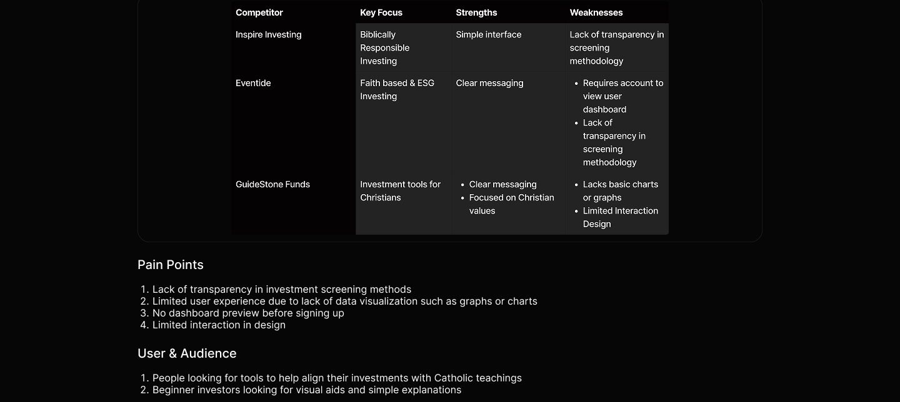
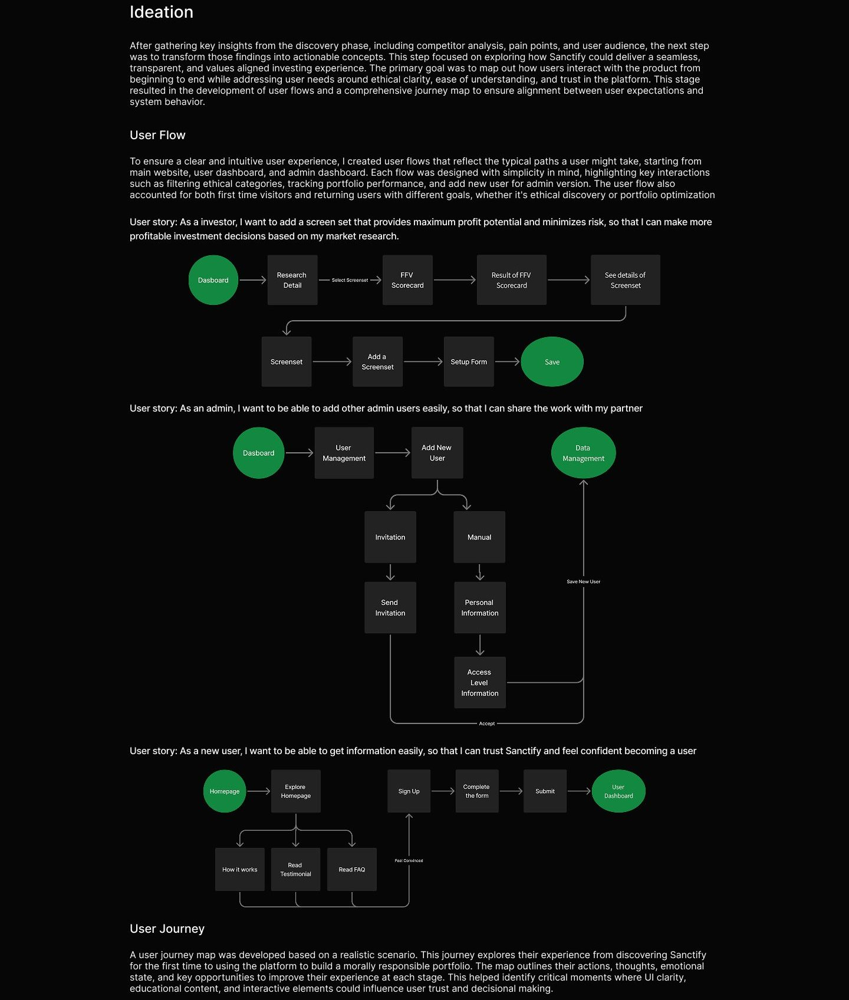
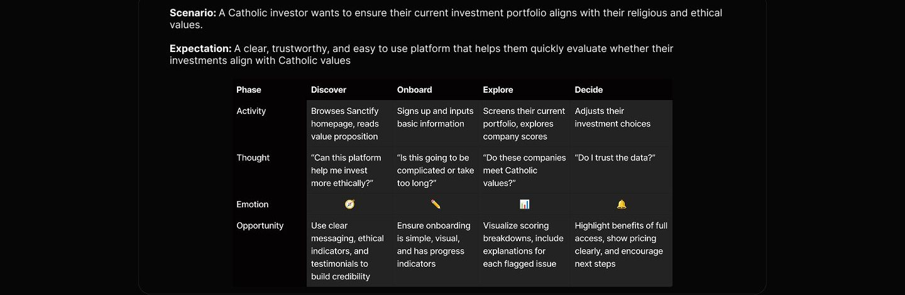
Design system
To ensure visual consistency and strengthen brand identity, I created a simple yet cohesive design system tailored for W*nder's educational and product-focused interface. The color palette combines soft neutrals with energizing accent tones to reflect both the calm and focus associated with CBD, while also evoking a sense of trust and clarity. For typography, I chose clean and legible typefaces that maintain readability across different screen sizes, aligning with the brand's modern and informative tone. Lastly, 1 applied a responsive 12-column grid system that supports flexibility in layout.
Design System
Neutral colors
Neutral 200 Neutral 600 Neutral 100 Neutral 300 Neutral 700 Neutral 500 Neutral 400 Neutral 50 #333333 #FFFFFF #181818 #303133 #606266 #83B3B3 #CCCCCC #E6E6E6
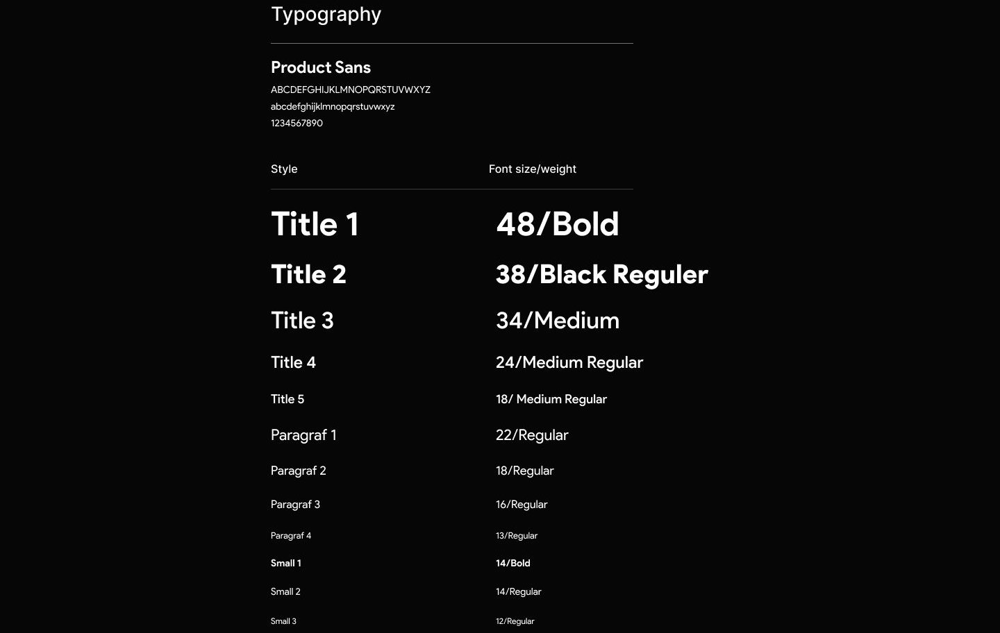
Grid System
Desktop (1920px)
405px 65px 30px
1110px
1920px
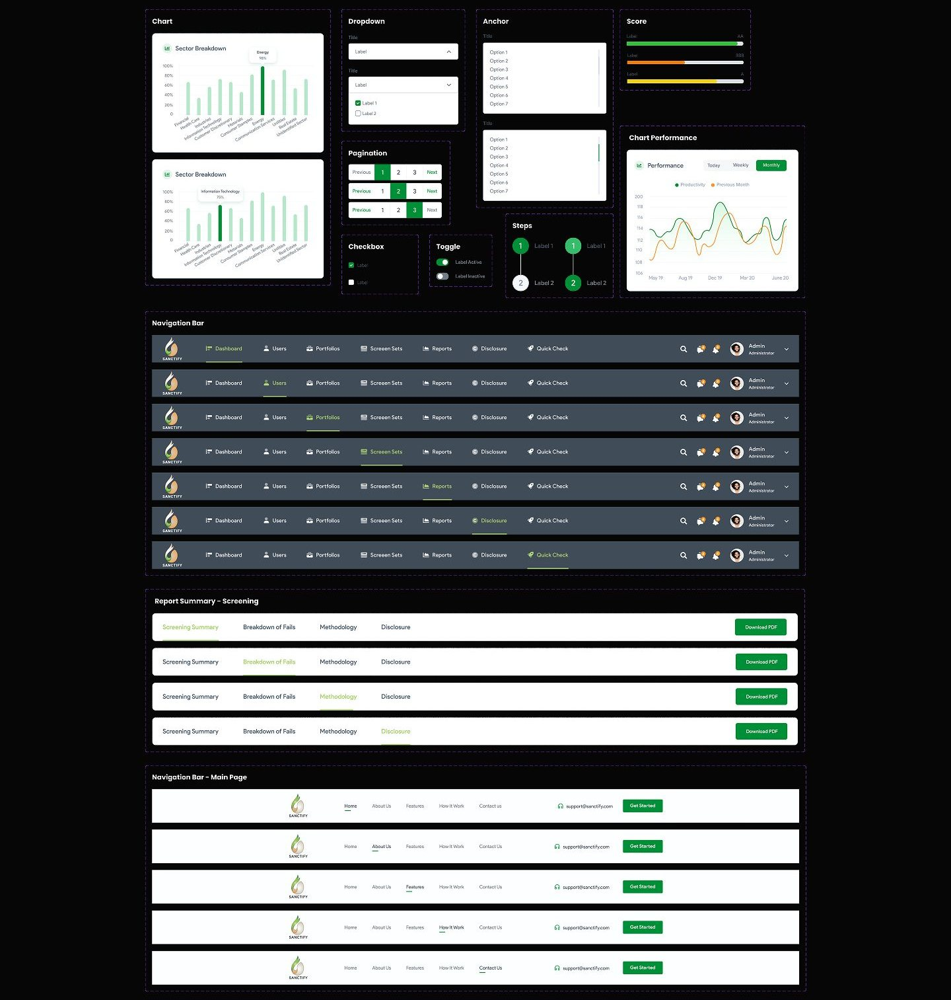
Final design
This design consists of four main variants: the main website, the user dashboard, the admin dashboard, and the application. In this section, I will only showcase the most essential parts, which primarily focus on the main website as it serves as the central access point for the other sections.
Main Website Hero Section: Free Trial CTA
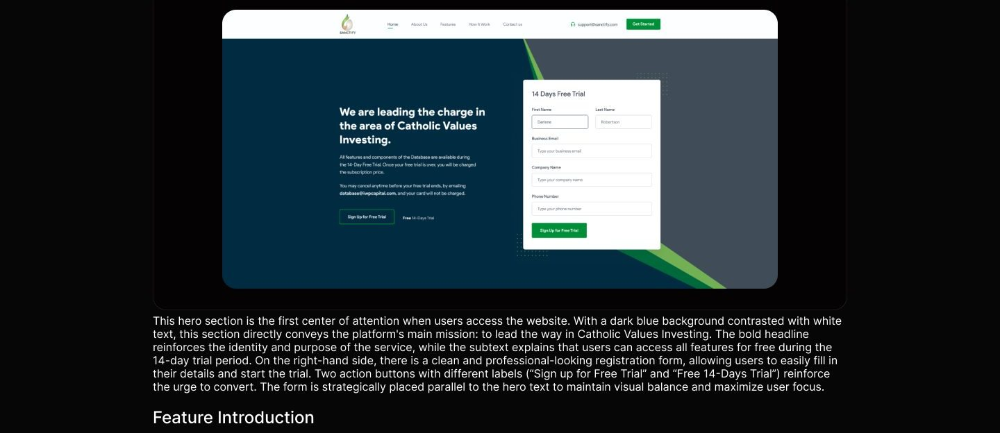
We are leading the charge in the area of Catholic Values Investing. Lorem lpsum is simply dummy tast of the prineng and
standard dummy text ever since the 1500d © Barking & Lending @ Garbing USAGS $118.50 © Corporate Donations @ Parmaceuticals Screen Sets © Environment © Security & Justice 260 Ost statedfortree
The second section continues the introduction of the platform with a more informative and light-hearted look. The layout consists of two columns: on the left, the text displays the company's commitment to Catholic values based investing, while on the right, there are visual illustrations of data related to stock performance and value. Horizontally displayed points of excellence such as "Banking & Lending", "Corporate Donations", "Environment", and others reinforce the moral values offered by the platform. This section also introduces some key features in the form of visual data charts, which help users understand the workings, forms, and benefits of the system more concretely.
Visual Data Preview
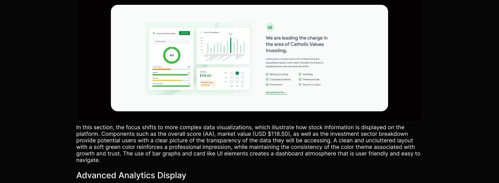
---
We are leading the charge in the area of Catholic Values Investing. Lorem Ig Band • Gorbla © Corporate Donations @ Phormiceutical. • Environment © Secunty & Justice Get stered for free
This section serves as a narrative reinforcement of the platform's core mission of Catholic values-based investing. While similar in structure to the previous section, this time the content reaffirms the company's commitment to ethics and morality as the foundation for investment screening. The headline remains consistent: "We are leading the charge in the area of Catholic Values Investing.", but the placement of the visual elements and text is reversed, with the visuals on the right and the text on the left, providing a dynamic visual rhythm and keeping users engaged by design. The focus of the text is to reiterate the platform's uniqueness in evaluating investments based on moral categories that are often overlooked by conventional financial systems, such as gambling, pharmaceuticals, and corporate political donations. By presenting a list of values such as "Gambling", "Pharmaceuticals", "Security & Justice", and "Corporate Donations" in a repetitive yet structured manner, the platform emphasizes that they do not only have a financial mission, but also carry a social and spiritual vision in their operations.
On the right side, the interface component is a dashboard that displays the sector breakdown and performance data. The performance graph shows data fluctuations over time, demonstrating the transparency and sophistication of the platform's analytics. This shows that the platform is not only based on moral values, but is also supported by a sophisticated data approach. By juxtaposing the value commitment on the text side and the performance visualization on the right side, this section combines the two great strengths of the platform: ethics and technology. The end goal is to reinforce users' belief that they do not have to sacrifice their moral values for credible data and strategic investments.
FAQ - General Question
FAQ's amity dummy wat of the printing and typeering industry|
May i cancel anytime before your free frisi ends? Are al composents of the Database are availicle?
Are al components of ehe Database are avalablo?
Hey i cancel anytime before your free trial ends Are al features available during the 14- Day Free Trial?
The FAQ section is designed in a minimalist and clean style, reinforcing the professional feel and providing breathing space between the previously dense visuals. The opening text explains that this section is aimed at answering common questions, with an accordion format that allows users to access answers quickly without the need for long scrolls. Questions such as feature availability during the trial period and cancellation policy are answered in a brief but informative manner. The "More Questions?" button signals that this page only contains basic FAQs, and users can get more information if needed.
Testimonial
It's really good.
Theis a mushence themal The This is a true swcterior there The This is a trupy spectaculer themel The This a a inarene tarina shamel re custom page builder is definitely one of custom pege brulder is defritely one of cuetom page bolder is deFinitely one of custom page builder is definitely one of custom page buider is dennisty one of the most intulive and user-friendy pege the treat where wear rory c
**** ****• **** Devid sidoik Devid siddik Johns doe John doe DESCEN DESONER
The testimonial section provides important social proof to build trust. Using a card layout, this section features comments from fictitious users but with a convincing and consistent writing style. Usernames and professions (such as "Designer") are displayed alongside star ratings and positive comments, reinforcing the impression that the platform is used and appreciated by many. The horizontal and consistent arrangement makes this section easy to read and creates a sense of repetition that is not boring.
Pricing
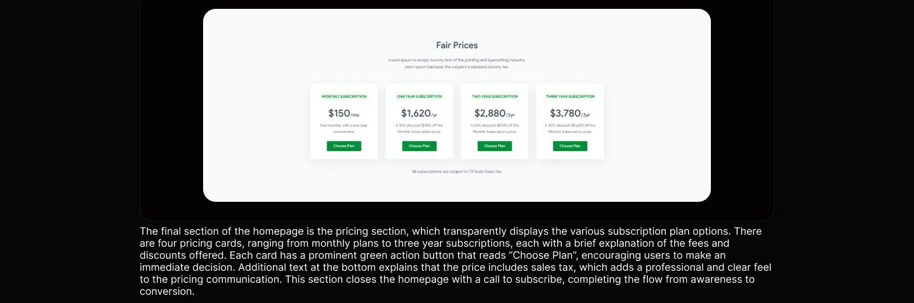
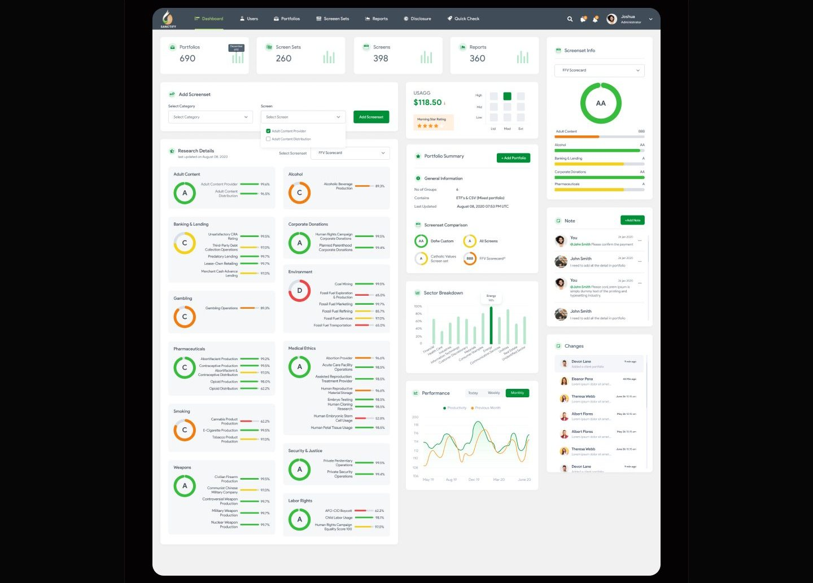
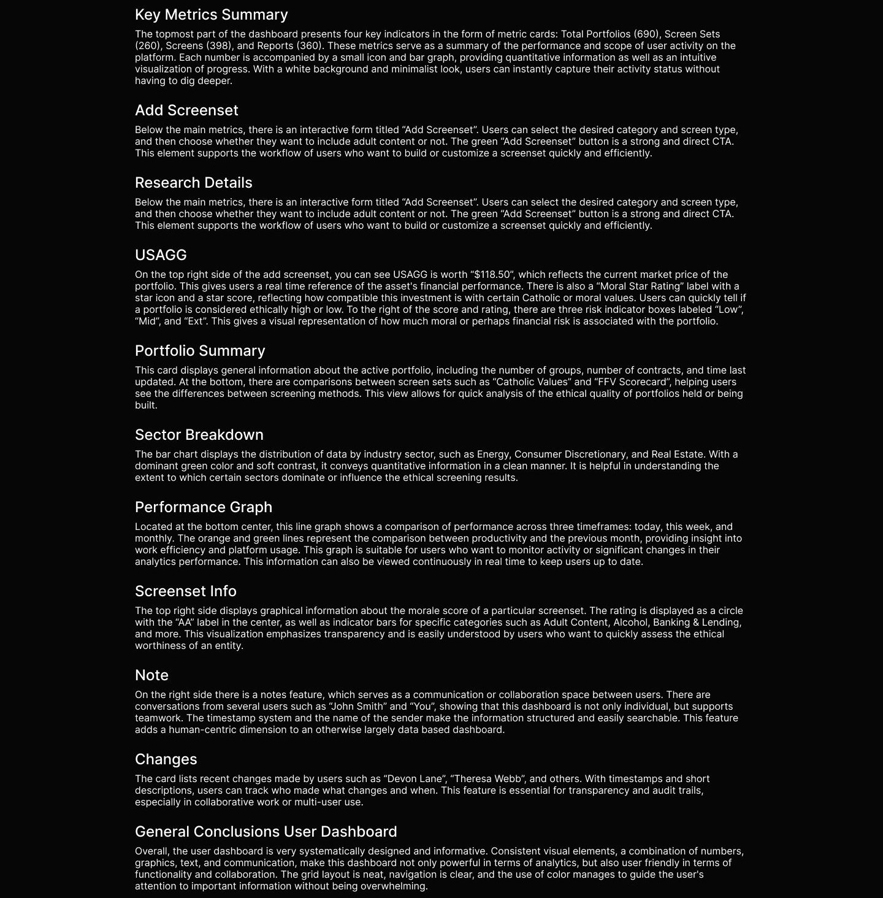
User Dashboard
This page comes from one user dashk can understand this project.
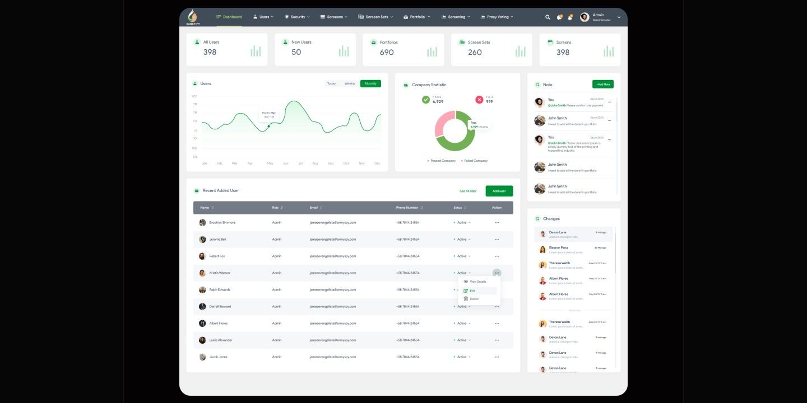
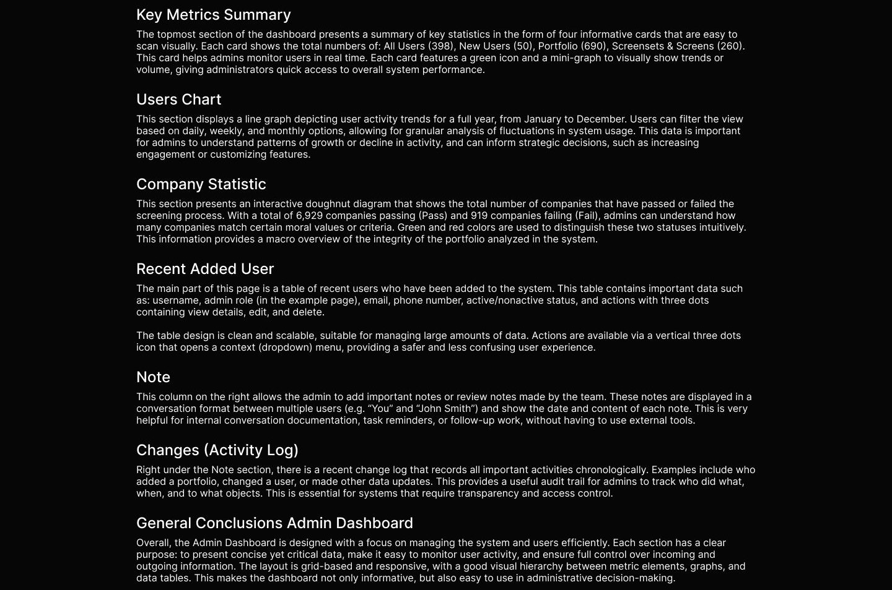
Application In the application section, I will show some of the pages that are featured on this platform, starting from sign up/login and continuing with how the featured features can be used. Authentication Pages: Login & Sign Up
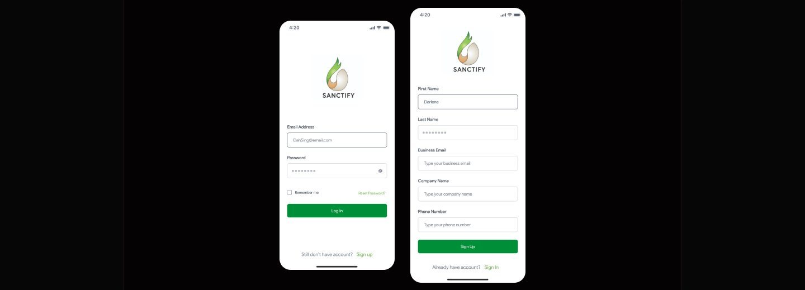
The Login page of the Sanctify app is designed with a minimalist and clean approach, emphasizing speed of access and an intuitive user experience. At the top, the Sanctify logo serves as an instantly recognizable brand identity, reinforcing the brand's visual consistency throughout the app. The login form consists of two main fields, namely email address and password. Below the form is a "Remember me" feature as an additional option to keep the user session active without re logging in, as well as a "Reset Password?" link on the right side as an account recovery path if the user forgets their password. The lower part closes with a solid green action button that reads "Log In" which becomes the main element of the CTA. For new users, there is an informative link "Still don't have an account? Sign up" written in a light style and emphasizing the green color on the 'Sign up' text to show interactivity. The Sign Up page provides a more comprehensive registration form for new users who want to create an account on the Sanctify platform. Its layout maintains a simple yet functional and business oriented approach, as the platform appears to target professional or corporate users. The form includes input fields for first name and last name, business email, company name, and phone number. A green "Sign Up" button serves as the primary CTA to complete the registration process. Similar to the login page, the bottom section offers a prompt for existing users with the text "Already have an account? Sign In," with emphasis on "Sign In" to indicate interactivity. In conclusion, both authentication pages are designed with a clean, user-friendly, and professional structure. The use of green as the primary color reinforces the brand identity of Sanctify, which reflects values of sustainability and ethics. The placement of elements, color contrast, and clear language all contribute to an efficient and easy to understand entry flow, suitable for both new and returning users.
Add Screenset
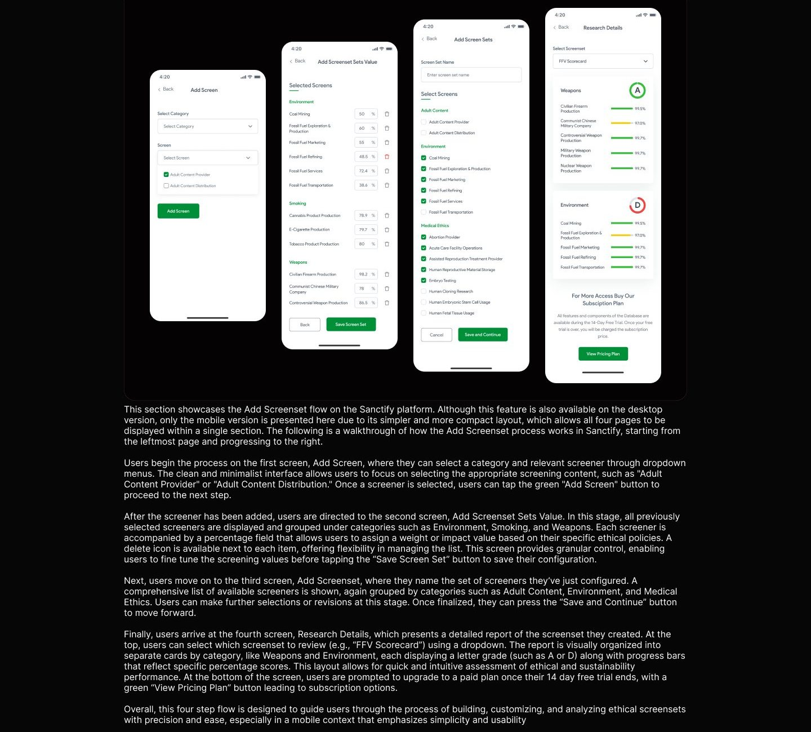
Usability testing
For this usability testing, I crafted a series of task based scenarios that simulate real user interactions flow on Sanctify's platform. The purpose of this testing session was to observe how users understand and navigate through each step of the flow. The tasks and scenarios were designed to reflect realistic goals and decision making contexts, allowing participants to engage with the prototype as if they were using the live product. By placing users in relevant scenarios, I was able to collect authentic feedback on usability, comprehension, and overall interaction quality. This testing was not limited to identifying surface level issues like button placements or visual clarity, but also aimed to uncover deeper usability challenges such as flow continuity, language clarity, and user confidence in decision making. The usability testing was conducted using a high fidelity prototype, and participants were asked to think aloud while performing the tasks. Their input, behaviors, and pain points were carefully observed and documented. Insights gained from this phase informed the next iteration of the design. So, this process ensured that each design decision was rooted in real user behavior and contributed to building a more intuitive and accessible product.
Reflection
If given more time, I would further refine Sanctify by taking the following steps: 1. Conducting additional user research to uncover deeper usability concerns or ethical decision making behaviors that may not have surfaced in the initial phase. This would allow me to gain more meaningful insights from users, particularly in how they interpret and interact with Sanctify's screening and scoring features. 2. Carry out usability testing based on the predefined tasks and scenarios developed for the "Add Screenset" flow. This testing would help evaluate the clarity of information hierarchy, the ease of navigation across multiple steps, and the overall confidence users feel when configuring and reviewing ethical screeners. 3. Based on findings from evaluations, I would identify pain points or areas of friction, then prioritize solving them to enhance usability. Improvements would be directed toward making the experience more seamless, intuitive, and aligned with the expectations of users who are likely to approach the platform with a professional or analytical mindset. 4. Continue iterating on both the visual and functional aspects of the design, refining the interface to ensure consistency, improving microinteractions, and strengthening the platform's ability to deliver complex screening data in a digestible, user centered way. These iterations would ensure that Sanctify not only functions well but also effectively communicates its value to users with clarity and confidence.